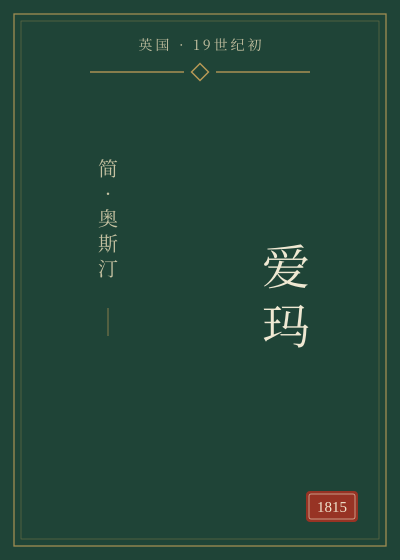
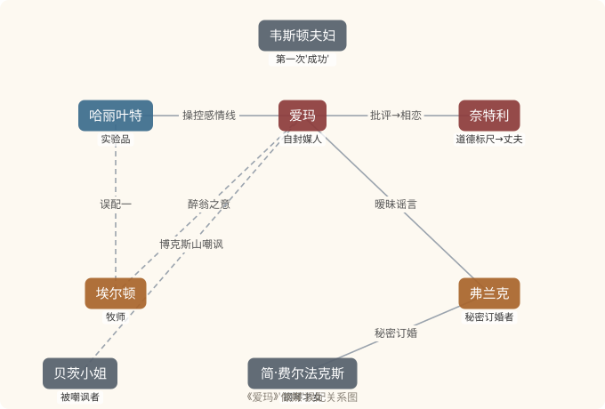

爱玛
一、基本信息
| 作者 | 奥斯汀 |
|---|---|
| 成书/出版 | 1815年出版（题献摄政王，Britannica） Jane Austen — Encyclopaedia Britannica（百科全书） |
| 国别/地区 | 英国 |
| 时代 | 近代 · 19世纪初 |
| 体裁 | 长篇小说（风尚小说） |
| 语言 | 英语 |

二、创作背景
出版：1815年12月出版，扉页题献摄政王（奥斯汀不情愿地接受，Britannica 提及 dedicated to the prince regent）；1816年瓦尔特·司各特在《评论季刊》发表书评——奥斯汀生前少有的重要评论（Britannica：Walter Scott praised Emma in the Quarterly Review (1816)）。
人物设计：奥斯汀自述'我要写一个除我之外无人会喜欢的女主角'（'a heroine whom no one but myself will much like'——其书信，通说待核）：有钱、聪明、自以为是的爱玛。
结构与《傲慢与偏见》的镜像：P&P 是'偏见被纠正'，爱玛是'干预他人者被教育'——配错对的喜剧机器。
三、内容脉络
爱玛·伍德豪斯——海伯里'无与伦比'的女主人——刚促成女伴泰勒小姐嫁给奈特利姐夫韦斯顿，自信心爆棚，决定继续'做媒'。
误配连环：她把新朋友哈丽叶特（私生女出身）依次'匹配'给农夫马丁（阻挠成功）、牧师埃尔顿（对方看中的是爱玛自己——'埃尔顿求婚'车厢羞辱一场）、再给弗兰克·丘吉尔——哈丽叶特的感情目标随爱玛的指挥棒起舞，最后竟指向奈特利本人。
博克斯山野餐：爱玛当众嘲讽贫嘴的贝茨小姐——被奈特利痛斥：'It was badly done, indeed!'（原文，公有领域）——爱玛的'成长时刻'。
真相与结局：弗兰克与简·费尔法克斯的秘密订婚曝光；爱玛发现自己早已爱着奈特利（'哈丽叶特指向奈特利'的恐慌使其自察——通说）；奈特利求婚，哈丽叶特回归马丁——'完美的安排'结束全书。
四、主要人物表
| 人物 | 身份 | 说明 |
|---|---|---|
| 爱玛·伍德豪斯 | 海伯里女主人 | '漂亮、聪明、有钱'三样全占（开篇原文意，待核）却以自我中心的'好心'害人——奥斯汀最'难喜欢'的女主角 |
| 奈特利先生 | 唐威尔庄园主 | 爱玛的姐夫之友与道德标尺：唯一敢当面批评她的人 |
| 哈丽叶特·史密斯 | 寄宿学校学生 | 出身不明的'漂亮笨姑娘'——爱玛的实验品 |
| 弗兰克·丘吉尔 | 韦斯顿之子 | 以隐瞒订婚为乐的'优雅骗子' |
| 简·费尔法克斯 | 贝茨小姐的侄女 | 才艺、贫困与秘密的承担者 |
| 贝茨小姐 | 贫嘴老小姐 | 唠叨到令人忽视的善良人——爱玛的嘲讽对象 |
五、主题与艺术特点
- 干预他人命运的自负：'做媒'即权力的行使——爱玛把阶级、出身当作可操纵的游戏（通说解读）。
- 看不见的情感真相：全书是一场'误读'的连锁——读者与爱玛一起被误导（'爱玛式的不可靠'）。
- 阶级的柔软边界：哈丽叶特的私生女身世、贝茨小姐的贫穷——慈善与势利的一线之隔（通说）。
- 艺术特点：全书无'外部事件'，冲突全在对话的细微处；'自由间接引语'反讽的巅峰（读者知而爱玛不知）。
六、影响与评论
- Britannica（Austen 条目）：Emma（1815）为其生前出版四部之一、题献摄政王；司各特1816年书评。
Jane Austen — Encyclopaedia Britannica（百科全书） - Britannica（A&P 条目）：约15部电影改编——其中1996/2020年《爱玛》改编（通说待核）。
Pride and Prejudice — Encyclopaedia Britannica（百科全书） - 学术地位：'Nobody, I think, has ever found Emma likable'（Jane Austen 批评史的名断——出处待核）与其持续流行的悖论。
Jane Austen — Encyclopaedia Britannica（百科全书） - Clueless（1995）现代化改编为经典（通说待核）。
Jane Austen — Encyclopaedia Britannica（百科全书）
七、阅读建议
- 没有'外部情节'，全部戏剧性在对话潜台词——需要慢读。
- 人物十余位且称谓复杂（伍德豪斯/奈特利/唐威尔），先画关系图。
- 爱玛的'讨厌'是有意设计——读完全书再回看开篇。
- 孙致礼译《爱玛》（译林出版社）：通行译本。
- 刘东译本（人民文学出版社，通说待核）：另一选择。
- 英文本：Penguin Classics 或 Cambridge Edition（通说待核）。
通读三卷 → 精读'埃尔顿车厢求婚'与'博克斯山'两场 → 对照《傲慢与偏见》看奥斯汀'自察教育'的两种设计。
八、待核实
- 1815年12月出版（Murray 书局说，通称）细节与初印数（2000册说，通说）待核。
- '无人会喜欢的女主角'书信出处（致侄女 Anna 或 John Murray 函，通说）待核。
- 《爱玛》影视改编年表（1996/2020）待核。
- 司各特书评原文待核。